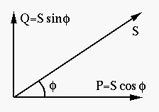

Next: Load/Source Matching for Maximum
Up: Chapter 3: AC Circuit
Previous: Quality Factor, Peak Frequency

All loads of the power plant can be modeled by a two-terminal network of
passive elements (resistors, inductors, capacitors, without any energy
sources) with complex impedance
where
 .
.
As the loads are typically inductive (e.g., electric motors, transformers),
i.e.,  , the phase angle
, the phase angle  of the impedance is always assumed
to be positive. Also we assume the input voltage to the load network is:
of the impedance is always assumed
to be positive. Also we assume the input voltage to the load network is:
then the current through the power transmission line and load can be found:
where
 is the RMS or effective value of the current.
is the RMS or effective value of the current.
The instantaneous power of the load is defined as
*
 .
.
Here we have defined
and  is the apparent Power (in volt-amps) defined as
is the apparent Power (in volt-amps) defined as
Note that the instantaneous power  can be either positive (energy
consumed by load) or negative (energy released by load).
can be either positive (energy
consumed by load) or negative (energy released by load).

Consider the average power over one period  :
:
But as
Now the average power can be written as
where
 is the real power (in watts), which represents
the average power dissipation by the load over one period
is the real power (in watts), which represents
the average power dissipation by the load over one period  :
:
 is the reactive power (in volt-amps-reactive or VARs),
which is not consumed but converted back and forth between the energy source
and the energy storing elements (inductors and capacitors)
is the reactive power (in volt-amps-reactive or VARs),
which is not consumed but converted back and forth between the energy source
and the energy storing elements (inductors and capacitors)
These definitions of real and reactive power suggest that the apparent power
can be treated as a complex variable:
i.e.,

On the other hand, substituting
 into
the equation, we also get
into
the equation, we also get
Comparing the two expressions for above, we get:
We see that the real power  is the power dissipated by
the resistive component
is the power dissipated by
the resistive component  of the load, while the reactive power
of the load, while the reactive power
 is stored and rX Comparing the two expressions for above, we get:
is stored and rX Comparing the two expressions for above, we get:
We see that the real power is the power dissipated by
the resistive component of the load, while the reactive power
is stored and released by the reactive components
( and
and  ) of the load.
) of the load.
The power consumed by an electrical motor is not reflected by the RL
circuit shown above. A more complete model of an electrical motor can be
found here.
Improvement of Power Factor
The Power factor is defined as
which represents the phase difference between the voltage and current in
the system, and the ratio between the real power () and the
reactive power (). To increase the efficiency of the power
transmission system, i.e., to deliver the real power  to the load while
minimizing the reactive power
to the load while
minimizing the reactive power  (thereby minimizing the current and power
dissipation along the transmission line), it is desirable to maximize the
power factor
(thereby minimizing the current and power
dissipation along the transmission line), it is desirable to maximize the
power factor  by reducing . As most loads are inductive (due
to the coils in electric motors and transformers), the power factor can be
reduced by using the shunt capacitor to cancel the inductive effect
in the system.
by reducing . As most loads are inductive (due
to the coils in electric motors and transformers), the power factor can be
reduced by using the shunt capacitor to cancel the inductive effect
in the system.
Assume the impedance of the inductive load is
 with
phase
with
phase
 . Find of the shunt capacitor so that
. Find of the shunt capacitor so that
 and
and
 .
.
Power factor correction
Power factor correction capacitors
Sometimes an unrealistically large capacitance is needed if the phase angle
of the load has to be reduced to zero (so that
),
while it is actually acceptable for the improved power factor to be less than 1,
e.g., 0.9. In this case, the phase angle of the load is
Solving this equation we get the required capacitance . As now we have
i.e.,
we get an even smaller capacitance
more practically implementable.
Next: Load/Source Matching for Maximum
Up: Chapter 3: AC Circuit
Previous: Quality Factor, Peak Frequency
Ruye Wang
2014-10-05